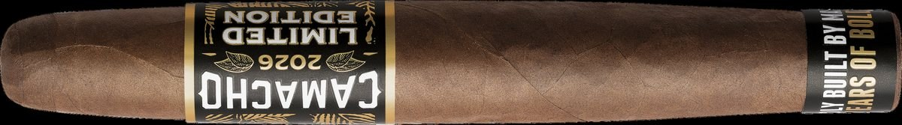
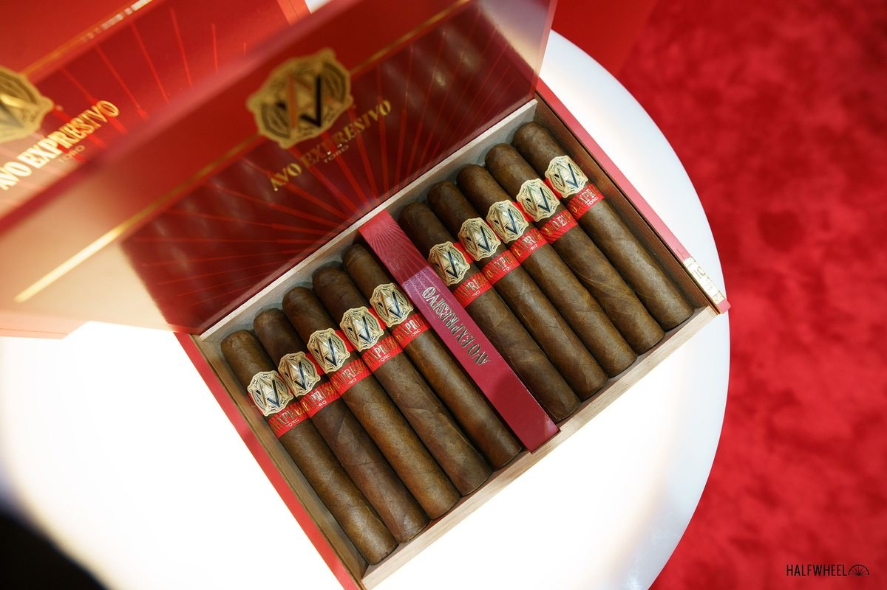

ダビドフ、34年間続いたプロシガー会員資格を終了
創設メンバーとして34年間加盟してきたドミニカの業界団体プロシガーを、ダビドフが脱退。130市場における世界的な優先事項と規制課題への資源集中が理由とされる。
記事全文を読む ›WORLD CIGAR NEWS & INTELLIGENCE
BEYOND HAVANA. BEYOND BORDERS.世界の葉巻を、もっと広く、もっと深く。
創設メンバーとして34年間加盟してきたドミニカの業界団体プロシガーを、ダビドフが脱退。130市場における世界的な優先事項と規制課題への資源集中が理由とされる。
記事全文を読む ›
ダビドフのカマーチョが限定シリーズ第2弾を発売。11/18パーフェクト（6×56）、60,000本限定、1本17ドル（約2,690円）。テーマはマスターブレンダーへの敬意です。
記事全文を読む ›
オッティンガー・ダビドフの2025年度売上高は5億4,530万スイスフラン（実質2.5％増）。創業150周年を増収で締め、生産拠点と直営店網への投資を続けている。
記事全文を読む ›
ダビドフのAVOがブランド史上初めてホンジュラスで製造する新定番ラインを6月25日に出荷。カマーチョ工場製で、2021年以来の新ラインです。
記事全文を読む ›ダビドフは同社初のベトナム特別版「エクスクルーシブ・エディション2026 ベトナム」を発表した。パーフェクト型の番号付き300箱限定で、現地パートナーとの提携5周年を記念する。
記事全文を読む ›
2009年の限定品の名を継ぎ、ドミニカ6産地・合計32年熟成の葉だけで構成した新ブレンドが定番化。ブラック・バンド・コレクションに加わり、3サイズで4月23日に発売された。
記事全文を読む ›
スイスのオッティンガー・ダビドフは、シュナイダー家の姉妹二人が全株式を直系の子孫へ移転したと発表した。経営陣や事業体制に変更はなく、同族経営の枠組みは維持される。
記事全文を読む ›
ダビドフが干支シリーズの次作「イヤー・オブ・ザ・シープ（羊年）リミテッドエディション 2027」を発表しました。シリーズ史上初めて、3種のフォーマットすべてがフィグラード（両端の細い変わり型）で、羊の角のカーブへのオマージュです。
記事全文を読む ›